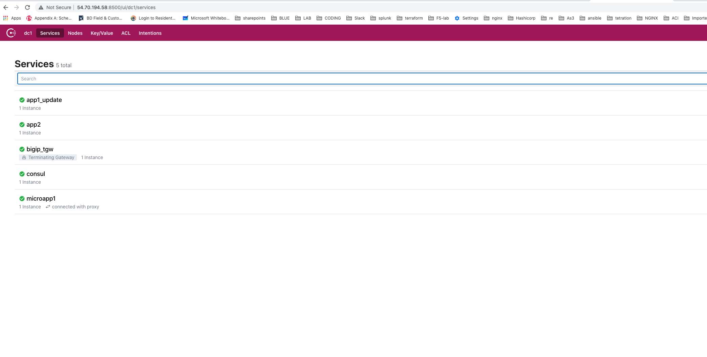

Lesson4 – > Lets check the Services on Consul¶
Agenda
Copy the Consul UI IP address from the output command
Open a browser and issue http://Consul_ip

You can see that we have 5 service shown in the consul UI
`app1_update``app2``bigip_tgw``consul``microapp1`Service
`microapp1`is running in the Consul Connect Service Mesh, service`app1_update`&`app2`are the service running behind the BIG-IP. Service`bigip_tgw`is the terminating gateway service registered to the Consul ConnectYou can check all the services by issuing
`cd /home/udf/consul-tg-env/service-configs`All these services were created by doing
`make allin lesson3Click on each service in the Consul UI to learn more about it
Click on the
`microapp1-->Service_check-->Proxy Info`to see that Connect Sidecar Listening is failing
Note
You can verify that the Connect Sidecar is showing Red in Proxy Health